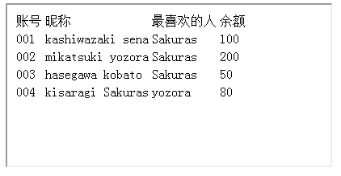

目前frame，iframe结构（以下称框架）被广泛应用于互联网网站。他们本身就相当于一个页面，有自己的文档树，因此，框架内的内容无法由外层的文档树获取。我们要寻找框架内的元素，必须先取到该框架的文档树，然后再利用上一节介绍的方法才行。
例6：有如下页面，里面的iframe嵌套了例4的页面，请在页面载入完成后自动修改kisaragi Sakuras最喜欢的人为Railgun。

IHTMLDocument2Example6/testPage.html
解释：iframe的src属性，指向的页面即为例4中的页面。由于这层框架的阻挡，我们已经无法直接从最外层的文档树开始寻找。需要想办法获取该框架里面的文档树。
步骤：
IHTMLDocument2Example6/Unit1.pas
第4行，声明了一个IWebBrowser接口，该接口用于指向一个浏览器对象。
第11行，我们把找到的iframe的IDispatch接口as为IWebBrowser接口（以前是IHTMLElement）。
第12行，从这个IWebBrowser中找出相应的IHTMLDocument接口。
值得注意的是，不是所有的元素的IDispatch都可以as为IWebBrowser的，有且只有标签为frame或者iframe的元素才行。
这回用了例5中谈到的直接遍历tr的方法。仅供参考。
由于框架会阻断由顶层文档发起的查找，所以大家分析页面结构的时候，要特别注意有没有框架结构。
框架内嵌套框架的话，只好一步步顺着框架来找下去了。
好啦，这一节就到这里，我们来总结一下：